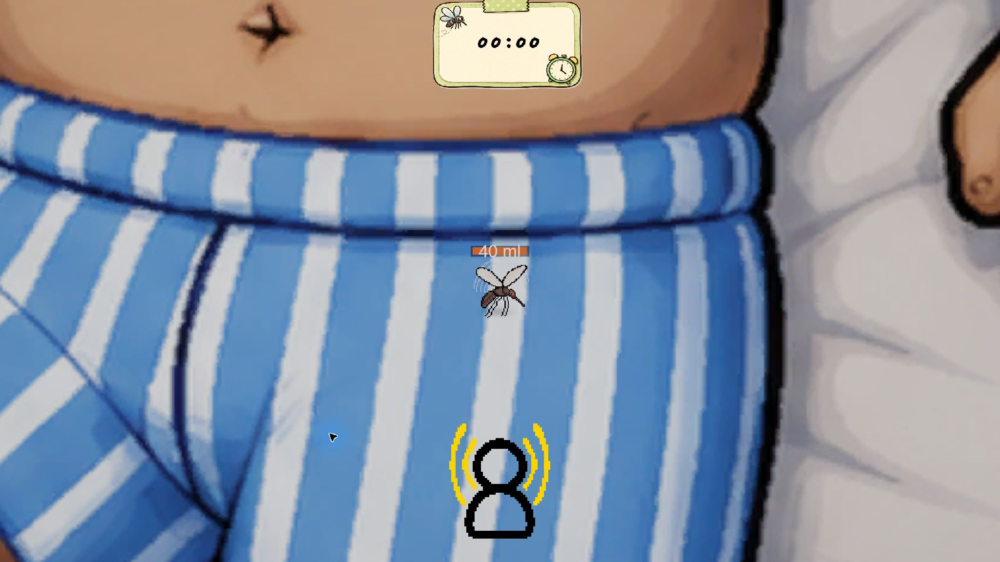
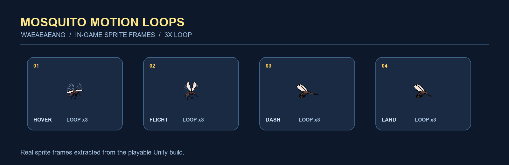

SYS.PORTFOLIOSTATUS · AVAILABLE
UNITY GAMEPLAY / CLIENT DEVELOPER
플레이를 구조화하고빌드로 증명합니다.
Enemy AI, UI 흐름, 씬·프리팹 통합과 네트워크 상태를 Unity에서 플레이 가능한 결과로 연결하는 Gameplay / Client 개발자 박한솔입니다.
- Unity 6URP · uGUI
- GameplayEnemy AI · Systems
- ClientNGO · UI Flow
흐름을 분석하고구조를 설계하고씬에 연결하고빌드로 검증합니다
UNITY / PLAYABLE PROJECTS
플레이 흐름을
완성합니다
기능 목록보다 문제·판단·통합·검증이 이어지는 플레이 가능한 결과를 보여줍니다.
 01
01
Unity 6 URP 2D1인 개발Windows
HorrorStealth
적 순찰·탐색·추격, 시야·소음 반응과 인벤토리 흐름을 통합한 2D 스텔스 호러 프로젝트.
AI / PERCEPTION EditMode 108/108 · Windows build
02

03오잼 대상2인 팀Unity 2D
왜애앵 (Waeaeaeng)
잠든 사람의 방 안에서 피를 모아 탈출해야 하는 모기 시점의 2D 탑뷰 스텔스 서바이벌 게임.
GAME UI / ART UI·아트 제작 · 환경설정 기능 구현
 04
04
Unity 3D2인 팀Windows
Corridor Commander
ScriptableObject 설치 계약과 웨이브·보상·상점·게이트·UI 흐름을 연결한 3D 디펜스 MVP.
GAMEPLAY / UI 10 validators · Windows build
 05
05
Additional PrototypeGodotWeb
Star Vanguard
전투 루프, 맵 선택, 무기·보상 진행과 Web Export를 직접 연결한 추가 플레이어블 프로토타입.
PROTOTYPE / EXPORT Fixed MVP13 Web snapshot

최신 Unity 원본의 실제 애니메이션 클립 순서로 만든 모션 GIF
RUNTIME / PROOF
코드를 실행 결과로 증명합니다
EditMode Tests
HorrorStealth 핵심 로직 검증
Non-merge Commits
Last Jump Crew 담당 이력
Build Errors
Corridor Commander 검증 빌드
CAREER / PRODUCTION
개발 판단을 받치는 제작 경험
게임 아트·기획·Unity 배치 경험을 클라이언트 구현과 협업 관점으로 연결합니다.
리듬게임 배경원화
노트·판정선·이펙트와 충돌하지 않도록 명도, 채도와 시선 흐름을 실제 게임 화면 기준으로 조정했습니다.
게임 총괄 기획 · 디자인
게임 기획, 공간과 시각 요소를 정리하고 프로젝트 목적에 맞는 제작 방향을 조율했습니다.
3D 프랍 · UI/UX · 원화
프랍, 배경, 아이콘과 UI를 제작하고 빠른 시안으로 후보를 넓힌 뒤 최종 방향을 정리했습니다.
3D 배경 콘셉트 · Unity 배치
VR 대형 월드 제작에 참여하고 프로그래머와 구현·최적화 관점의 피드백을 주고받았습니다.

PROFILE / HANSOL PARK
플레이 흐름을 읽고,
Unity 씬에 연결합니다.
핵심 루프부터 세우고, 시스템과 UI를 씬·프리팹에 직접 연결한 뒤 테스트와 빌드로 확인합니다. 아트와 기획 경험은 개발 중 화면 가독성과 협업 판단을 빠르게 맞추는 기반입니다.
UNITY CLIENT
Unity 6 · URP · uGUI · TextMesh Pro
GAMEPLAY
C# · Enemy AI · AI Navigation · Input System
ARCHITECTURE
ScriptableObject · Scene · Prefab · UI Flow
WORKFLOW
Git · GitHub · Unity VC · Build Validation
ART / VISUAL DEVELOPMENT
아트 포트폴리오
배경원화·콘셉트 아트·게임 UI 경험을 화면 가독성과 협업 판단에 연결합니다.


CONTACT / READY